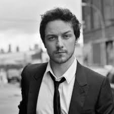
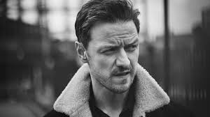

Биография
Джеймс Макэвой родился в 1979 году в Глазго (Шотландиия) в семье санитарки психиатрической лечебницы Элизабет Джонстоун и строителя Джеймса Макэвоя-старшего.Когда мальчику было семь лет, родители развелись. Его мать по слабости здоровья отправила Джеймса к своим родителям-мясникам, Мэри и Джеймсу Джонстоун, жившим в муниципальном доме в Драмчапеле (англ.)русск.. Иногда к ним приезжала пожить и она сама. У Джеймса есть сестра Джой (вокалистка в шотландской группе «Streetside») и младший единокровный брат Дональд. После развода родителей Джеймс с отцом не общается, хотя в 2006 году, когда его сын обрёл известность, Джеймс-старший сказал винтервью Sunday Mirror, что хотел бы наладить с ним контакт, но не знает, как это сделать.

В юности, посещая католическую школу имени Фомы Аквинского (англ.)русск., Glasgow в Джорданхилле (англ.)русск., Джеймс хотел стать священником, ношотландский нрав привёл его в ряды Военно-морских сил Соединенного Королевства.
Среди наиболее значительных ролей Макэвоя — фавн Мистер Тумнус в первой части «Хроник Нарнии», молодой Лето Атрейдес II в мини-сериале «Дети Дюны», Уэсли Гибсон в боевике «Особо опасен», Рори О’Шей в драме «А в душе я танцую». Джеймс также являлся кандидатом на роль Бильбо Бэггинса в экранизации «Хоббита» Джона Толкина, однако контракт достался Мартину Фримену. Кроме того, он снялся в фильме «Искупление», в 2009 году вышла картина с его участием «Последнее воскресение» — опоследних днях жизни Льва Толстого, а в 2011 году сыграл роль Профессора Икс Чарльза Ксавьера в первой части новой трилогии «Люди Икс: Первый класс».

В 2013 году Макэвой снялся в скандальной экранизации романа Ирвина Уэлша «Грязь» в роли сумасшедшего коррумпированного шотландского детектива Брюса Робертсона. Рольсильно отличается от привычного амплуа Макэвоя, при этом большинство критиков высоко отметили его игру, а некоторые из них даже сочли образ Робертсона лучшим завсю его карьеру.